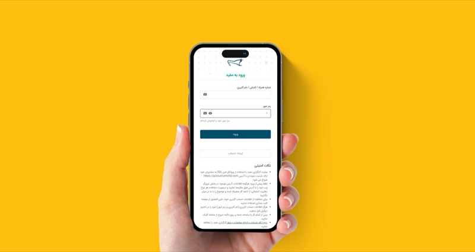

Designing for retail investors at Mofid
- Problem
- The broker's account creation flow was friction-heavy and visually inconsistent with the rest of the platform, hurting completion.
- Approach
- Concept-to-final redesign of the authentication experience — refined typography hierarchy, interaction patterns, and reduced the steps to first usable account state. Documented patterns for adoption across the broader platform.
- Outcome
- Patterns from this work were adopted across the platform. Across a ten-year tenure I designed web and mobile interfaces for the brokerage, including its website.
- Stack
- Figma
- Typography systems
- Interaction design
- Financial UX